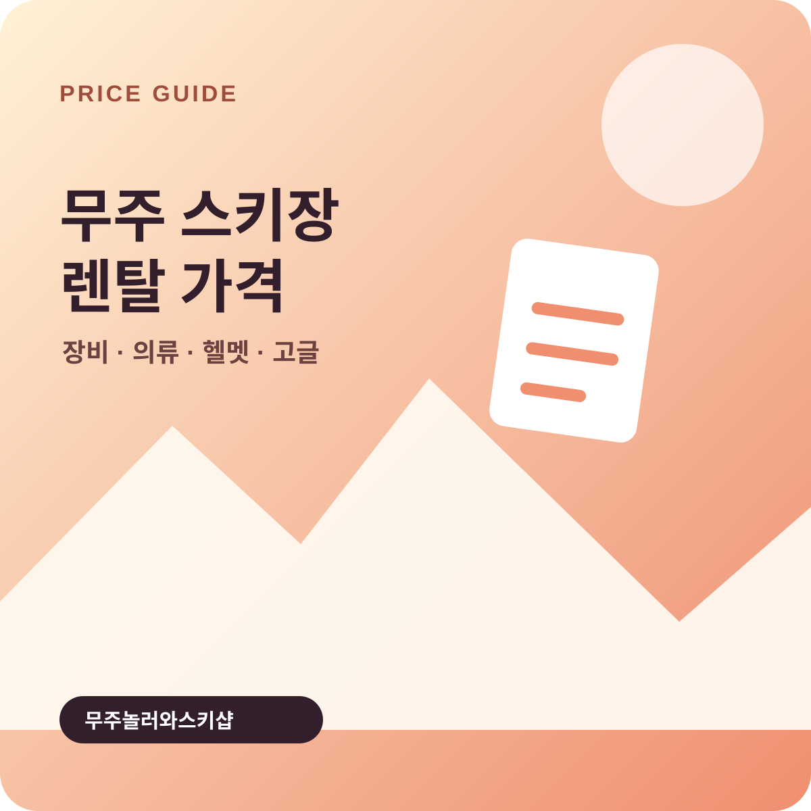

Rental Price · 2026/27 시즌 기준
무주 스키장 렌탈 가격: 40,000원 풀세트·품목별 요금

무주놀러와스키샵 홈페이지에는 장비·의류·헬멧·고글 풀세트 40,000원 오픈 한정가가 안내되어 있습니다. 품목별 공개 요금은 장비와 의류 각각 15,000원, 헬멧과 고글 각각 10,000원, 헬멧·고글 세트 15,000원입니다.
아래 표는 홈페이지에 공개된 2026/27 시즌 품목별 렌탈 안내입니다. 별도로 표시된 풀세트 특가의 적용 날짜와 인원 조건은 예약 화면에서 확인해 주세요. 리프트권은 이용 시간과 주중·주말에 따라 달라지므로 무주리조트 리프트권 안내에서 따로 확인할 수 있습니다. 매장을 직접 운영하며 받는 가격 문의를 바탕으로 정리했습니다.
신규 오픈을 기념해 준비한 풀세트 한정가이며, 리조트 정문 바로 앞 매장이라 장비 수령과 리프트권 발권을 한 자리에서 마칠 수 있습니다.
렌탈 품목별 가격은 얼마인가요?
| 품목 | 가격 | 단위 |
|---|---|---|
| 스키·보드 장비 | 15,000원 | 1인 |
| 의류 | 15,000원 | 1인 |
| 헬멧 | 10,000원 | 1개 |
| 고글 | 10,000원 | 1개 |
| 헬멧 + 고글 | 15,000원 | 1개 |
예상 금액은 어떻게 계산하나요?
- 1. 이용 인원을 정합니다.
장비와 의류가 필요한 인원을 기준으로 수량을 계산합니다. - 2. 보호장비를 선택합니다.
헬멧, 고글, 헬멧·고글 세트 중 필요한 구성을 고릅니다. - 3. 리프트권을 별도로 더합니다.
리프트권 시간권과 주중·주말 요금을 확인해 전체 금액을 비교합니다.
예약 전에 무엇을 확인해야 하나요?
- 방문 날짜와 도착 시간을 정합니다.
- 스키 또는 보드 장비와 의류 사이즈를 준비합니다.
- 슬로프 앞 배달이 필요하면 요청사항에 픽업 장소를 적습니다.
- 가격과 운영 조건은 예약 시점의 화면을 기준으로 다시 확인합니다.
자주 묻는 질문
무주 스키장 렌탈 가격은 품목별로 얼마인가요?
홈페이지에는 장비·의류·헬멧·고글 풀세트 40,000원 오픈 한정가가 안내되어 있습니다. 품목별 공개 요금은 스키·보드 장비와 의류 각각 1인 15,000원, 헬멧과 고글 각각 1개 10,000원, 헬멧·고글 세트 15,000원입니다.
렌탈 가격은 1인 기준인가요, 1개 기준인가요?
장비와 의류는 1인 기준이고, 헬멧과 고글은 1개 기준으로 안내되어 있습니다. 예약 화면에서 수량과 적용 금액을 확인하세요.
렌탈 가격에 리프트권도 포함되나요?
아니요. 리프트권은 별도 요금입니다. 이용 시간과 주중·주말에 맞는 리프트권을 따로 확인해 전체 예상 금액에 더하세요.
패키지 가격도 이 표와 같은가요?
현재 홈페이지에는 장비·의류·헬멧·고글 풀세트 40,000원 오픈 한정가가 표시됩니다. 적용 날짜와 인원 조건은 공개 문구에 적혀 있지 않으므로 방문 날짜를 선택한 예약 화면에서 최종 금액을 확인하세요.